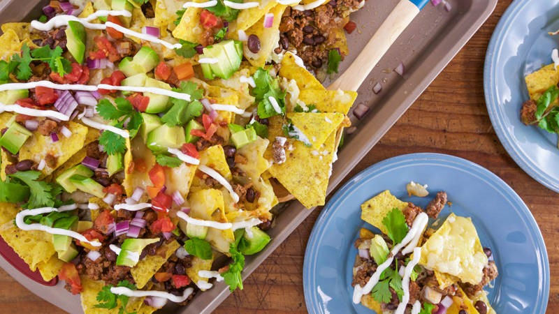

Tailgate Nachos
Tailgate Nachos

Ingredients
- 1 pound ground beef
- 1 cup medium-diced onions
- 1 8-ounce jar taco sauce
- 1 15-ounce can seasoned black beans
- 1/4 cup chopped pickled jalapeños
- 2 cups shredded extra-sharp cheddar cheese
- 2 cups shredded Pepper Jack cheese
- 1 12- to 14-ounce bag tortilla chips
- 1 avocado, peeled, pitted and finely diced
- 1 10-ounce can diced tomatoes with green chilies, drained
- 1/2 cup small-diced red onions
- 1/2 cup cilantro leaves, chopped
- Juice of 1 lime
- 1 tablespoon olive oil
- Sour cream, for serving
Instructions
- Preheat oven to 350°F
- Place a large skillet over medium-high heat and add the ground beef and diced onions.
Cook until the meat is no longer pink then drain.
- Place drained meat and onions in a large bowl and combine with taco sauce, beans and jalapeños.
- In a smaller bowl, combine the sharp cheddar and Pepper Jack cheeses.
- Lay half of the tortilla chips out on a baking sheet or arrange them in an oven-safe skillet.
Spread half of the beef mixture over the chips and top with half of the mixed cheeses.
Add another layer of tortilla chips then top with the remaining beef and cheese.
Bake for 20 minutes, or until the cheese is melted.
- While the nachos are baking, combine the avocado, tomatoes, red onions, cilantro, lime juice and olive oil in a separate bowl.
- Serve nachos topped with the avocado mixture and sour cream.